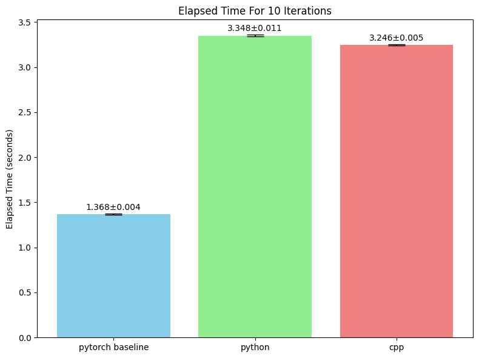

In this project, my main objective was to implement a capsule network [1] using the Loma language and then leverage the Loma AD compiler for automatic differentiation. Since this is a source-to-source approach, I wanted to compare its speed and memory usage against pytorch, which employs a mixture of source-to-source and tape-based AD.
While modifying the Loma compiler, I realized that AD and IR-to-CPP conversion should be considered separately. This helps simplify the state that AD needs to handle.
The final results indicated that the pytorch implementation completed one iteration, including both forward and backward passes, in half the time of the Loma implementation.
Given this outcome, I conducted further tests and proposed some analyses and hypotheses. The data showed that the primary differences lay in the number of soft page faults and cache references. This suggests that the Loma implementation has more frequent memory access patterns, leading to increased memory allocation and deallocation.
While I encountered more pitfalls than initially expected, I’ve successfully implemented most of the planned components for the Loma capsule network. The main exception is a fully functional, effective optimizer. As a result, the current Loma capsule network cannot be trained using anything beyond naive stochastic gradient descent.
To reduce the modifications to the Loma compiler, I tried to limit the size of the feature set, even if this made the Loma code more cumbersome.
I’ve modularized the capsule network into several distinct functions. Some of these functions necessitate input and weight parameters. For instance, consider the function:
1 | def forward_1(x: In[TorchTensorFloat], w_conv2d: In[TorchTensorFloat], b_conv2d: In[TorchTensorFloat]) -> TorchTensorFloat: |
Each of these functions is designed to return a pytorch tensor. These forward functions themselves require glue code written in Python or another language to integrate them into the complete network architecture. The decision not to implement the entire network solely in Loma stems from the cumbersome nature of certain intermediate steps, such as “reshape” operations, when expressed directly in Loma. This verbosity arises from the lack of array literal syntax in Loma. Consequently, an operation like would currently require assign each dimension in the shape one by one.
1 | def network(x): |
To facilitate this integration and leverage libtorch’s capabilities, I’ve extended the Loma compiler to include support for libtorch/pytorch tensors.
This decision was driven by the understanding that naive matrix operations, without sophisticated cache optimizations, would inevitably lead to suboptimal performance. pytorch’s c++ interface, libtorch, on the other hand, provides highly optimized matrix operations and more complex functionalities like convolutions, which are critical for neural network implementations. Furthermore, libtorch offers a rich set of functions, making it suitable for implementing both forward and backward passes efficiently.
I introduced a new type, , to represent FP32 torch tensors within the Loma language. To enable operations on these tensors, I’ve developed several c++ functions that serve as built-in functions within Loma. This set of functions also includes their corresponding reverse-mode implementations for backpropagation. For example, for the ReLU activation function, I’ve implemented:
1 | torch::Tensor _relu(torch::Tensor x); // Forward pass |
All these newly implemented functions have undergone some testing. The testing methodology involved comparing the gradients computed by my custom reverse functions against the results obtained from libtorch’s native AD. This validation process ensures the correctness and accuracy of the implemented backward passes.
Crucially, these backpropagation functions adhere to Loma’s established function signature for reverse functions. This consistency minimizes the required modifications to the Loma compiler itself.
To bridge the function call between Python and C++, I’ve also integrated pybind11 support. Pybind11 serves as a crucial framework for creating seamless bindings between Python and C++.
One of the significant advantages of pybind11 is its automatic memory management. This feature greatly simplifies the process of copying tensors between the two languages, allowing for a much more straightforward data flow.
However, a limitation I encountered is pybind11’s handling of raw pointers. This means that Loma’s native float gradients couldn’t be directly utilized. Instead, derivatives had to be passed back from C++ to Python by wrapping them in a std::make_tuple and returning them as part of the function’s output. While this introduces a minor workaround, the overall benefits of pybind11 for memory management and inter-language communication outweigh this limitation.
Compiling libtorch programs presented a significant challenge in itself, transforming into an good learning experience. This process offered a opportunity to revisit and solidify my understanding of compilers and linkers.
I gained a deeper insight into how g++ locates necessary libraries and include files during the compilation process. Furthermore, I got a clearer comprehension of how Linux systems search for dynamic libraries within the environment variable.
I gained practical experience in using pybind11 to write C++ functions that can be invoked from Python. My use case in this project only leveraged a small subset of pybind11’s capabilities: primarily the creation of callable C++ functions. The framework also supports the binding of C++ classes, which can be converted into python objects.
I found several features of pybind11 particularly valuable: its smart pointer and auto memory management, which simplify resource handling, and I can use c++ function just like python.
The most significant insight gained from this project is that AD can be a completely seperate process from IR-to-source-code generation. This decoupling is important as it makes the operations involved in AD easier to understand and manage.
For example, the assignment of a zero value to a derivative, like dx = 0;. If AD and source code generation were tightly coupled, the AD process would need to be aware of the specific type of . For instance, if were a tensor, it would need to generate dx = torch::zeros_like(x);. However, by delegating this type-specific handling to the IR-to-source-code generation phase, we can simplify the AD process for sure. The AD module no longer needs to concern itself with the concrete type of or the specific syntax for zeroing it out; it simply expresses the intent to set to zero.
Another example of this benefit is with pybind11 function registration. The process of registering C++ functions to be callable from python is solely a concern of code generation, completely independent of AD. By decoupling these two processes, the AD functions doesn’t need to consider the complexities of pybind11 registration during its operations. This separation of concerns allows each component to focus on its core responsibility, leading to a more modular, understandable, and maintainable system.
1 | PYBIND11_MODULE(f, m) { |
I compared three versions of capsule network implementation:

From Figure 1, we can see that the pytorch implementation is the fastest, taking less than half the time of the python and c++ versions. Additionally, the c++ version, due to removed pybind11 overhead, runs slightly faster than the python version.
| Metric | PyTorch | C++ (Loma) | Ratio (C++/PyTorch) |
|---|---|---|---|
| Time (s) | 1.368 | 3.246 | 2.37x |
| Memory (MB) | 1206 | 1484 | 1.23x |
| Soft Page Faults (k) | 1455 | 3635 | 2.50x |
| Cache References (M) | 2.7 | 4.1 | 1.52x |
Using the /usr/bin/time -v command to observe memory access patterns, I made a couple of key discoveries.
The c++ version utilized slightly more memory than the pytorch version, but the difference wasn’t substantial. This suggests that even without explicit optimizations in the Loma AD for reducing intermediate variables, their impact on overall memory footprint wasn’t the primary bottleneck.
The most significant divergence between the two implementations lay in the number of soft page faults.
A soft page fault occurs when a program attempts to access a virtual memory address, but the corresponding page isn’t yet mapped into the process’s virtual address space.
Several factors can lead to soft page faults, including:
In this context, soft page faults likely arise when libtorch attempts to create a new tensor, but the memory for that tensor hasn’t yet been allocated.
Therefore, the high number of soft page faults in the c++ version strongly suggests that this implementation frequently saves intermediate variables, leading to excessive memory allocation and deallocation.
Also, the difference in the number of soft page faults closely mirrored the difference in elapsed time between the two programs. This correlation strongly indicates that the elevated soft page fault count is the most probable cause for the c++ version being slower than the pytorch implementation.
Using the perf tool to analyze cache utilization, I observed that the difference in cache-misses between the two implementations was minimal, both around 15%. This is reasonable, as the matrices involved are inherently large, making cache-misses unavoidable.
However, a notable disparity emerged in the number of cache references. The pytorch version executed only million cache references, whereas the c++ version executed million. Cache references denote the number of times the CPU accesses the L1, L2, or L3 caches.
This discrepancy indicates that the c++ version engages in significantly more frequent memory accesses. This heightened memory activity likely contributes to the increased number of soft page faults previously observed, and consequently, to the slower execution speed.
Regarding libtorch binary is distributed as dynamic libraries, all function calls to libtorch necessarily traverse through the dynamic library. While this might introduce a minor performance overhead, the time consumed by this process is expected to be negligible when compared to the duration of the actual matrix operations.
[1] Sabour, S., Frosst, N., & Hinton, G. E. (2017). Dynamic routing between capsules. Advances in neural information processing systems.